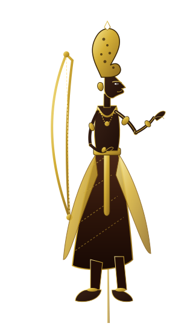
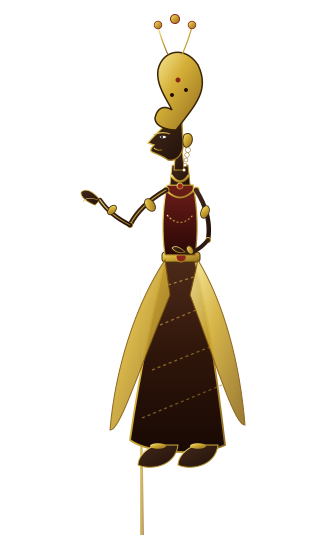
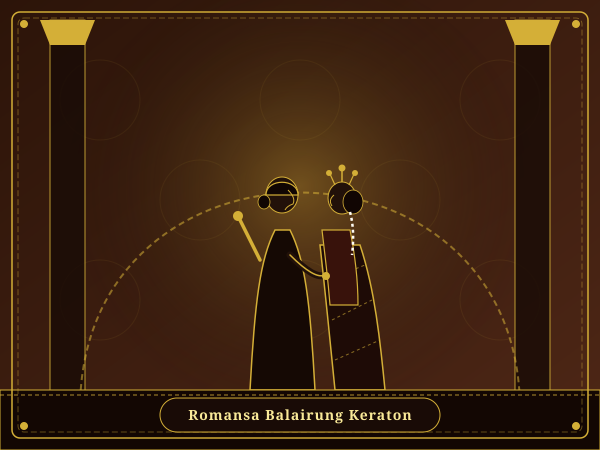
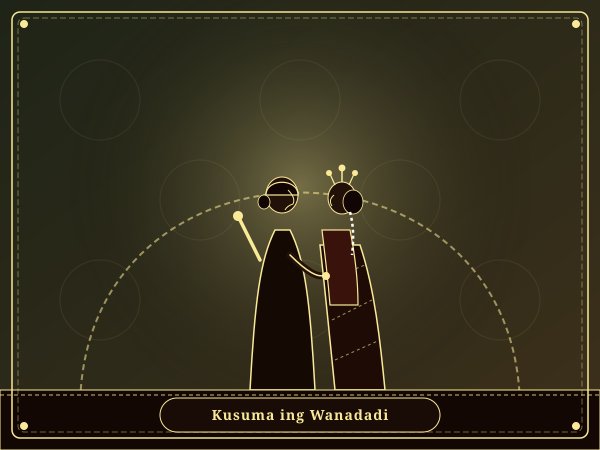
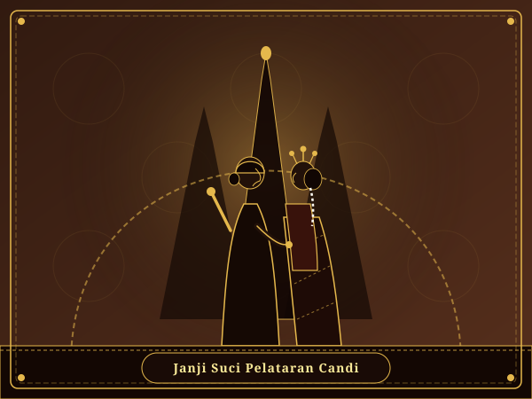
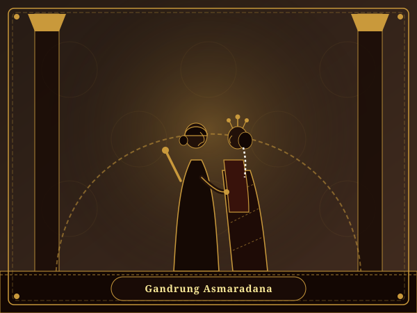
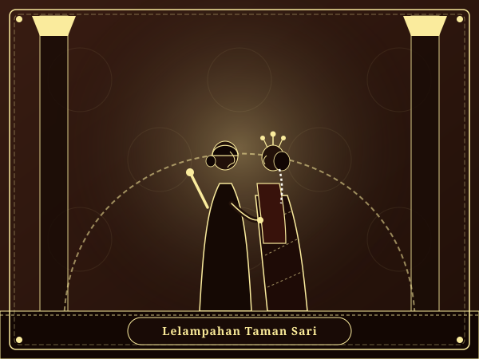
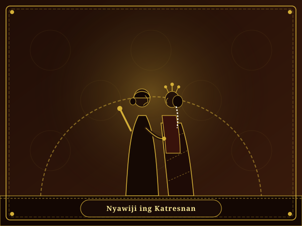

Raden Rama Wijaya, S.T.
Putra pambayun saking panjenenganipun:
Bp. Prabu Dasaratha
kaliyan
Ibu Dewi Ragan Sukowati
Ngayogyakarta Hadiningrat
Serat Ulem Pawiwahan
Katur Dhumateng Panjenenganipun:
Bapak / Ibu / Sedherek Ingkang Kinurmatan
Nyuwun pangapunten menawi wonten kalepatan nyerat asma utawi gelar
Serat Katresnan Suci


"Rasaning tresna sejati, nyawiji ing dalem pangestu Hyang Widhi, kados lelampahaning Sri Rama kaliyan Kusuma Dewi Shinta." Serat Asmaradana Adiluhung
Pambuka
Kanthi nyenyuwun sih nugrahaning Gusti Allah SWT Ingkang Maha Agung, lan hangrantu lunturing sih wilasa panjenengan, kula sakulawarga hangadhahi kajat hangraketaken pasedherekan lumantar dhauping putra-putri pinanganten:
بِسْمِ اللَّهِ الرَّحْمَٰنِ الرَّحِيمِ
وَمِنْ آيَاتِهِ أَنْ خَلَقَ لَكُم مِّنْ أَنفُسِكُمْ أَزْوَاجًا لِّتَسْكُنُوا إِلَيْهَا وَجَعَلَ بَيْنَكُم مَّوَدَّةً وَرَحْمَةً ۚ إِنَّ فِي ذَٰلِكَ لَآيَاتٍ لِّقَوْمٍ يَتَفَكَّرُونَ
"Dan di antara tanda-tanda (kebesaran)-Nya ialah Dia menciptakan pasangan-pasangan untukmu dari jenismu sendiri, agar kamu cenderung dan merasa tenteram kepadanya, dan Dia menjadikan di antaramu rasa kasih dan sayang. Sungguh, pada yang demikian itu benar-benar terdapat tanda-tanda (kebesaran Allah) bagi kaum yang berpikir."
"Lan ing antarane pratandha panguwasa-Ne yaiku Panjenengane nyipta pasangan kanggo sira saka jinisira dhewe, supaya sira rumangsa ayem tentrem ana ing sandhinge, lan Panjenengane ndadekake ing antaranira rasa tresna asih lan welas asih. Sayekti ingkang mangkono iku dadi pratandha tumrap para wong kang padha mikir."
Mugi dados jodho ingkang sakinah, mawaddah, warahmah, tansah pinaringan karaharjan lan kabagyan lair tumusing batin.
Temanten Sarimbit
Panyuwun pandonga pangestu katur dhumateng calon temanten ingkang badhe hanglampahi gesang bebrayan
Putra pambayun saking panjenenganipun:
Bp. Prabu Dasaratha
kaliyan
Ibu Dewi Ragan Sukowati
Ngayogyakarta Hadiningrat
Putri pambarep saking panjenenganipun:
Bp. Prabu Janaka
kaliyan
Ibu Dewi Kausalya
Surakarta Hadiningrat
Galeri Katresnan
Potret lelampahan katresnan Raden Rama Wijaya kaliyan Dewi Shinta wonten ing maneka swasana adat Jawi adiluhung

Busana Basahan Keprabon ing Plataran Kraton

Kebaya Beludru Soga ing Taman Pinus Asri

Busana Kanigaran Emas ing Sangandhaping Candi

Lurik Mataraman Klasik ing Pelataran Tamansari

Paes Ageng Tradisional ing Gerbang Banyu Sumur

Studio Soga Klasik Latar Batik Parang Barong
Titimangsa Pawiwahan
Kanthi nyenyuwun berkahing Gusti Ingkang Maha Mirah, adicara badhe kalampahan ing:
Sabtu Pon, 24 Oktober 2026
13 Bakda Mulud 1960 Jimawal
Pukul 08.00 s.d. 10.00 WIB
Pendhapa Sasana Kriya Ageng
Jl. Malioboro No. 128, Danurejan, Kota Yogyakarta
Sabtu Pon, 24 Oktober 2026
13 Bakda Mulud 1960 Jimawal
Pukul 11.00 s.d. 14.00 WIB
Grand Ballroom Pendhapa Ageng
Jl. Malioboro No. 128, Danurejan, Kota Yogyakarta
Tata Cara Adat
Reroncening tata upacara adat panggih kairing Gending Kebo Giro ingkang kebak pitutur luhur
Mempelai sarimbit sami balang-balangan suruh isi jambe, minangka pralambang talining asih lan katresnan ingkang kenceng.
Penganten kakung ngidak tigan, lajeng dipunwijiki dening penganten putri minangka wujud baktining garwa marang kakung.
Kekalih temanten dipunsingkepi kain sindur abrit-pethak dening rama penganten putri tumuju palenggahan sasana rinengga.
Mempelai kekalih dipunpangku dening rama penganten putri, mratandhani bilih katresnan marang mantu lan anak sami timbange.
Penganten kakung maringaken raja kaya, beras kuning, lan arta dhumateng garwa minangka tandha tanggel jawab nafkah lahir batin.
Temanten sarimbit sami dulang-dulangan sekul punar kancana, minangka pralambang guyub rukun ngrasakaken pait getire urip.
Papan Palenggahan
Pendhapa Sasana Kriya Ageng, Jl. Malioboro No. 128, Danurejan, Kota Yogyakarta
Filosofi Katresnan
Kisah katresnan Raden Rama Wijaya kaliyan Dewi Shinta ing pewayangan Jawa sanes namung cariyos asmara lumrah, nanging dados pralambang kasucen, kasabaran, lan kasetyan ingkang tanpa kendhat. Sanadyan kedah ngambah jurang pacingan lan samudra halangan ing wana Dhandhaka, katresnanipun tansah ajeg kados samodra ingkang boten naté asat.
Kados déné Rama ingkang tansah njagi lan ngurmati garwanipun kanthi kaluhuran budi, lan Shinta ingkang tansah setya tuhu ngancani saben jangkah, mekaten ugi panyuwun pandonga kula sakaliyan supados saged hangrakit bale wisma ingkang adhedhasar tresna sejati, asih, lan asuh dumugi puputing yuswa.
Buku Tamu & RSVP
Matur nuwun sanget katur para rawuh ingkang kersa hangrawuhi lan maringi donga pamuji dhumateng temanten kekalih
Tandha Asih
Donga pangestu panjenengan sampun dados kanugrahan ingkang tanpa upami tumrap kula sakaliyan. Nanging menawi wonten kersa maringi tandha katresnan, saged lumantar rekening ing ngandhap menika:
BANK CENTRAL ASIA (BCA)
8820 4567 8901
a.n. Raden Rama Wijaya
BANK MANDIRI
1370 0123 4567 8
a.n. Dewi Shinta